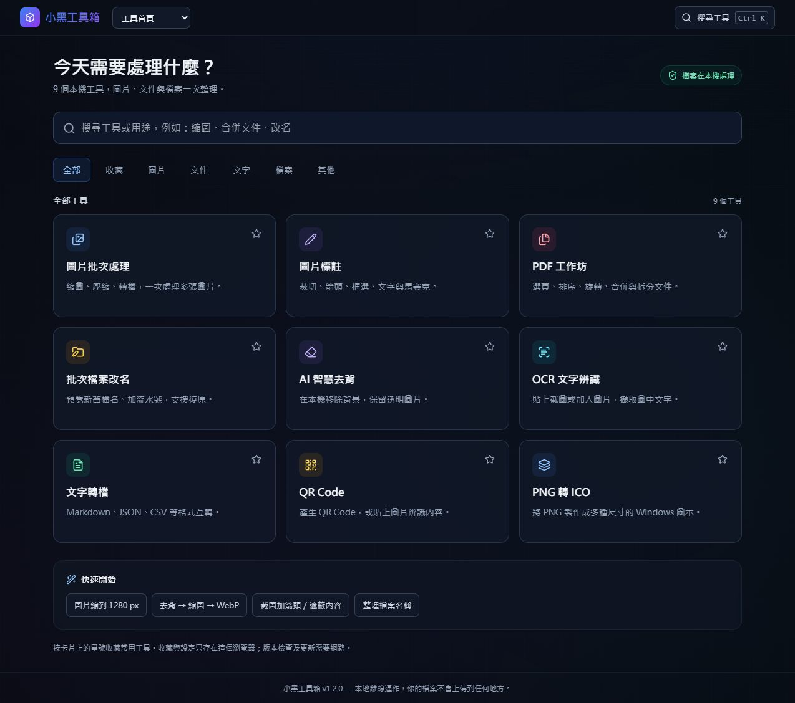
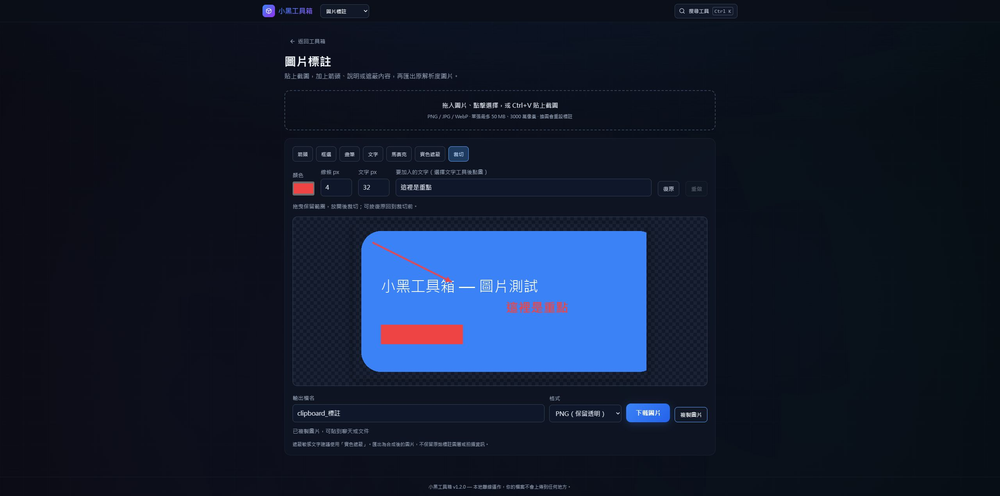
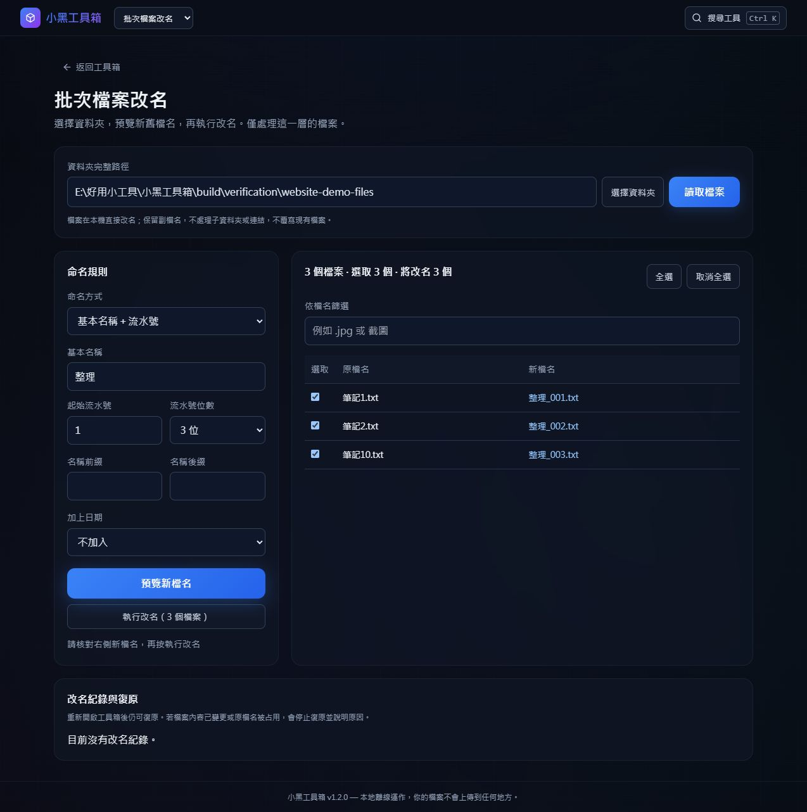
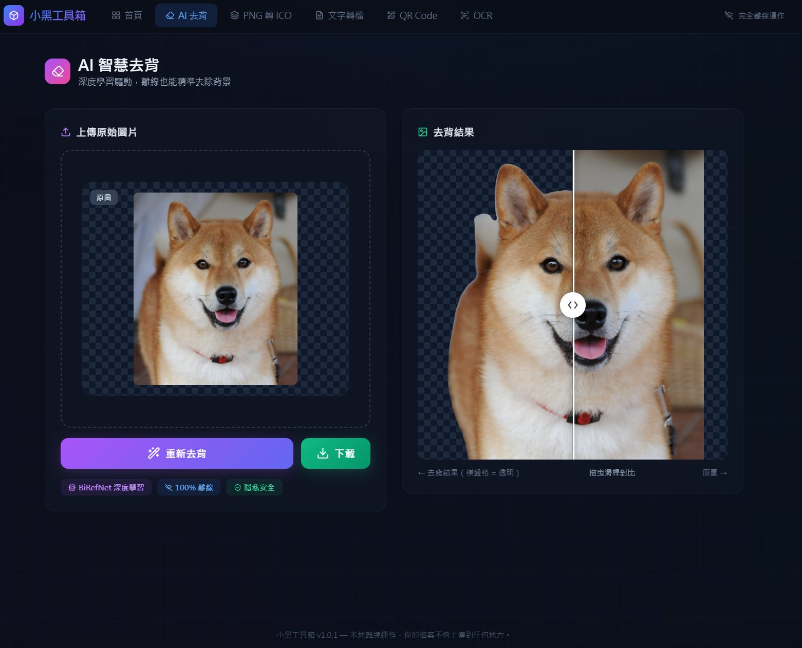
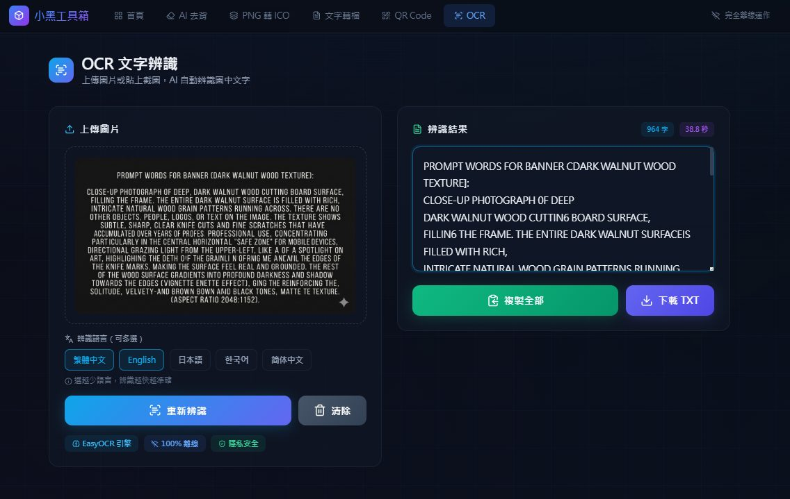

9 項日常小工具，把圖片、文件、文字與檔案一次整理好。解壓後雙擊就能開，檔案都在你的電腦上處理。
下載 Windows 完整版Windows 10 / 11（64 位元）· v1.2.0 · 完整 ZIP 約 1.48 GB
已包含 AI 模型，解壓即用。工具可離線使用，檢查及下載更新需要網路。





工具箱採用「本機伺服器 + 瀏覽器」設計：程式在你的電腦上啟動一個小型 Flask 伺服器，瀏覽器自動打開操作介面，所有運算都在本機完成。
v1.1.0 升級 v1.2.0 的差量包約 57 MB。更舊或不符合基準的版本會使用完整包；差量 ZIP 供內建更新使用，新使用者請下載完整版。
線上更新已實測完成下載與自動重啟。程式會自動檢查，按下「立即更新」才會安裝。
| 作業系統 | Windows 10 / 11（64 位元） |
| 版本 | v1.2.0 · 2026/10/01 |
| 下載大小 | 完整 ZIP 約 1.48 GB，包含 AI 去背與 OCR 模型 |
| 硬碟空間 | v1.2.0 解壓後約 2.2 GB；下載、解壓及更新建議預留至少 5 GB |
| 網路 | 九項工具可離線使用；版本檢查及下載更新需要網路 |
| 安裝方式 | 解壓即用，不需安裝 Python 或任何額外套件 |
| 線上更新 | 從 GitHub Releases 下載，相符版本使用差量包，必要時使用完整包 |
v1.2.0 · Windows 10 / 11 · 完整 ZIP 約 1.48 GB · 解壓即用